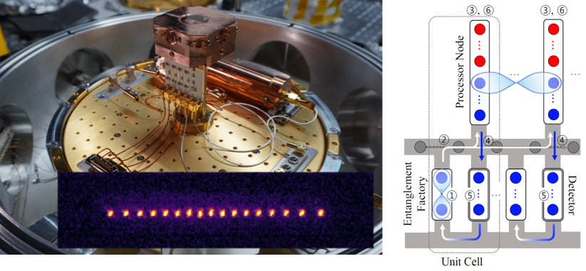

Abstract
- 1Department of Quantum Information Engineering, Sungkyunkwan University, Suwon, Gyeonggi, Republic of Korea
QuETI Lab (Quantum Engineering with Trapped Ions) focuses on developing trapped-ion qubit platforms toward scalable and practical quantum information processing. Trapped ions offer exceptionally long coherence times and high-precision quantum control, making them a promising platform for quantum computing. However, scaling trapped-ion systems remains challenging due to technical limitations in optical control, trap fabrication, and system architecture. In this talk, I will introduce our ongoing research efforts to address these challenges and discuss potential directions for future research and collaboration. In the first part, I will present our experimental efforts to develop trapped-ion quantum computing platforms. We have constructed two cryogenic ion-trap systems and successfully trapped ytterbium and barium ions, respectively. I will highlight several technologies we have been developing along the way, including three-dimensional microfabricated ion traps, optically-phase-locked continuous-wave Raman laser systems, and compact cryogenic RF resonators. In the second part, I will discuss our recent architectural study on scaling trapped-ion quantum computers through ion shuttling. We propose a shuttling-based distributed quantum computing architecture in which entanglement is distributed by physically transporting qubits between processing modules. We evaluate its system-level performance and compare it with two representative approaches: the quantum charge-coupled device (QCCD) architecture and photonic distributed quantum computing. By presenting our research from both experimental and architectural perspectives, I hope to stimulate discussions on shared research interests and potential opportunities for collaboration.

- Seunghyun Baek, Seok-Hyung Lee, Dongmoon Min, and Junki Kim, arXiv:2512.02890